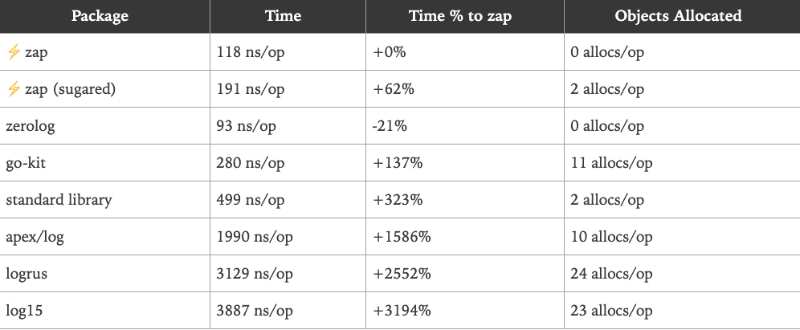

1. Zap日志
介绍¶
在许多Go语言项目中，我们需要一个好的日志记录器能够提供下面这些功能：
- 能够将事件记录到文件中，而不是应用程序控制台。
- 日志切割-能够根据文件大小、时间或间隔等来切割日志文件。
- 支持不同的日志级别。例如INFO，DEBUG，ERROR等。
- 能够打印基本信息，如调用文件/函数名和行号，日志时间等。
默认的Go Logger¶
在介绍Uber-go的zap包之前，让我们先看看Go语言提供的基本日志功能。Go语言提供的默认日志包是https://golang.org/pkg/log/
实现GoLogger¶
设置Logger¶
实现一个Go语言中的日志记录器非常简单——创建一个新的日志文件，然后设置它为日志的输出位置。
func SetupLogger() {
logFileLocation, _ := os.OpenFile("/Users/q1mi/test.log", os.O_CREATE|os.O_APPEND|os.O_RDWR, 0744)
log.SetOutput(logFileLocation)
}
使用Logger¶
让我们来写一些虚拟的代码来使用这个日志记录器。
在当前的示例中，我们将建立一个到URL的HTTP连接，并将状态代码/错误记录到日志文件中。
func simpleHttpGet(url string) {
resp, err := http.Get(url)
if err != nil {
log.Printf("Error fetching url %s : %s", url, err.Error())
} else {
log.Printf("Status Code for %s : %s", url, resp.Status)
resp.Body.Close()
}
}
logger的运行¶
现在让我们执行上面的代码并查看日志记录器的运行情况。
func main() {
SetupLogger()
simpleHttpGet("www.google.com")
simpleHttpGet("http://www.google.com")
}
当我们执行上面的代码，我们能看到一个test.log文件被创建，下面的内容会被添加到这个日志文件中。
2019/05/24 01:14:13 Error fetching url www.google.com : Get www.google.com: unsupported protocol scheme ""
2019/05/24 01:14:14 Status Code for http://www.google.com : 200 OK
Go Logger的优势和劣势¶
优势
它最大的优点是使用非常简单。我们可以设置任何io.Writer作为日志记录输出并向其发送要写入的日志。
劣势
- 仅限基本的日志级别
- 只有一个Print选项。不支持INFO/DEBUG等多个级别。
- 对于错误日志，它有Fatal和Panic
- Fatal日志通过调用os.Exit(1)来结束程序
- Panic日志在写入日志消息之后抛出一个panic
- 但是它缺少一个ERROR日志级别，这个级别可以在不抛出panic或退出程序的情况下记录错误
- 缺乏日志格式化的能力——例如记录调用者的函数名和行号，格式化日期和时间格式。等等。
- 不提供日志切割的能力。
Uber Zap¶
Zap是非常快的、结构化的，分日志级别的Go日志库。
为什么选择Uber-go zap¶
- 它同时提供了结构化日志记录和printf风格的日志记录
- 它非常的快
根据Uber-go Zap的文档，它的性能比类似的结构化日志包更好——也比标准库更快。 以下是Zap发布的基准测试信息
记录一条消息和10个字段:

记录一个静态字符串，没有任何上下文或printf风格的模板：

安装¶
运行下面的命令安装zap
go get -u go.uber.org/zap
配置Zap Logger¶
Zap提供了两种类型的日志记录器—Sugared Logger和Logger。
在性能很好但不是很关键的上下文中，使用SugaredLogger。它比其他结构化日志记录包快4-10倍，并且支持结构化和printf风格的日志记录。
在每一微秒和每一次内存分配都很重要的上下文中，使用Logger。它甚至比SugaredLogger更快，内存分配次数也更少，但它只支持强类型的结构化日志记录。
Logger¶
- 通过调用
zap.NewProduction()/zap.NewDevelopment()或者zap.Example()创建一个Logger。 - 上面的每一个函数都将创建一个logger。唯一的区别在于它将记录的信息不同。例如production logger默认记录调用函数信息、日期和时间等。
- 通过Logger调用Info/Error等。
- 默认情况下日志都会打印到应用程序的console界面。
我们首先使用普通的logger来做一个简单的测试
package main
import (
"net/http"
"go.uber.org/zap"
)
var logger *zap.Logger
// InitProductionLogger ...
func InitProductionLogger() {
logger, _ = zap.NewProduction()
}
func simpleHTTPGet(url string) {
resp, err := http.Get(url)
if err != nil {
logger.Error(
"Error fetching url...",
zap.String("url", url),
zap.Error(err),
)
} else {
logger.Info("Success...",
zap.String("statusCode", resp.Status),
zap.String("url", url),
)
resp.Body.Close()
}
}
func main() {
InitProductionLogger()
// 在程序退出之前，把缓冲区的日志都刷到磁盘里。
defer logger.Sync()
simpleHTTPGet("http://www.baidu.com")
}
[root@xeq-vm-197-77-opsorder-test zap-demo]# go run main.go
{"level":"info","ts":1622196068.7713954,"caller":"zap-demo/main.go:25","msg":"Success...","statusCode":"200 OK","url":"http://www.baidu.com"}
func (log *Logger) MethodXXX(msg string, fields ...Field)
MethodXXX可能是Info,Error,Debug,Panic等等，每一个方法都接收一个消息字符串还有任意数量的zapcore.Field参数，以Info级别的日志为例
// Info logs a message at InfoLevel. The message includes any fields passed
// at the log site, as well as any fields accumulated on the logger.
func (log *Logger) Info(msg string, fields ...Field) {
if ce := log.check(InfoLevel, msg); ce != nil {
ce.Write(fields...)
}
}
SugarLogger¶
SugarLogger的调用方式和Logger大同小异，稍微有一些不太一样的地方
- 大部分的实现基本都相同。
- 惟一的区别是，我们通过调用主logger的. Sugar()方法来获取一个SugaredLogger。
- 然后使用SugaredLogger以printf格式记录语句
package main
import (
"net/http"
"go.uber.org/zap"
)
var sugarlogger *zap.SugaredLogger
// InitProductionSugarLogger ...
func InitProductionSugarLogger() {
logger, _ := zap.NewProduction()
sugarlogger = logger.Sugar()
}
func simpleHTTPGet(url string) {
sugarlogger.Debug("Trying to hit Get request for %s")
resp, err := http.Get(url)
if err != nil {
sugarlogger.Error(
"Error fetching url...",
zap.String("url", url),
zap.Error(err),
)
} else {
sugarlogger.Info("Success...",
zap.String("statusCode", resp.Status),
zap.String("url", url),
)
resp.Body.Close()
}
}
func main() {
InitProductionSugarLogger()
// 在程序退出之前，把缓冲区的日志都刷到磁盘里。
defer sugarlogger.Sync()
simpleHTTPGet("http://www.baidu.com")
}
[root@xeq-vm-197-77-opsorder-test zap-demo]# go run main.go
{"level":"info","ts":1622198680.0117903,"caller":"zap-demo/main.go:26","msg":"Success...{statusCode 15 0 200 OK <nil>} {url 15 0 http://www.baidu.com <nil>}"}
zap.NewProduction，那么接下来用一下develop的试试
// InitProductionSugarLogger ...
func InitProductionSugarLogger() {
logger, _ := zap.NewDevelopment()
sugarlogger = logger.Sugar()
}
[root@xeq-vm-197-77-opsorder-test zap-demo]# go run main.go
2021-05-28T18:47:35.750+0800 DEBUG zap-demo/main.go:17 Trying to hit Get request for %s
2021-05-28T18:47:35.941+0800 INFO zap-demo/main.go:26 Success...{statusCode 15 0 200 OK <nil>} {url 15 0 http://www.baidu.com <nil>}
定制Logger¶
将日志写入文件而不是终端¶
我们要做的第一个更改是把日志写入文件，而不是打印到应用程序控制台。
- 我们将使用zap.New(…)方法来手动传递所有配置，而不是使用像zap.NewProduction()这样的预置方法来创建logger。
func New(core zapcore.Core, options ...Option) *Logger
zapcore.Core需要三个配置，分别为Encoder，WriteSyncer，LogLevel.
1、Encoder
编码器(如何写入日志)。我们将使用开箱即用的NewJSONEncoder()，并使用预先设置的ProductionEncoderConfig()。
zapcore.NewJSONEncoder(zap.NewProductionEncoderConfig())
指定日志将写到哪里去。我们使用zapcore.AddSync()函数并且将打开的文件句柄传进去。
file, _ := os.Create("./test.log")
writeSyncer := zapcore.AddSync(file)
3、log level
哪种级别的日志将被写入
那么重新改造过后的代码就变成了下面这个样子
package main
import (
"net/http"
"os"
"go.uber.org/zap"
"go.uber.org/zap/zapcore"
)
var sugarlogger *zap.SugaredLogger
// InitLogger ...
func InitLogger() {
writeSyncer := getLogWriter()
encoder := getEncoder()
core := zapcore.NewCore(encoder, writeSyncer, zapcore.DebugLevel)
logger := zap.New(core)
sugarlogger = logger.Sugar()
}
func getLogWriter() zapcore.WriteSyncer {
file, _ := os.Create("./test.log")
return zapcore.AddSync(file)
}
func getEncoder() zapcore.Encoder {
return zapcore.NewJSONEncoder(zap.NewProductionEncoderConfig())
}
func simpleHTTPGet(url string) {
sugarlogger.Debug("Trying to hit Get request for %s")
resp, err := http.Get(url)
if err != nil {
sugarlogger.Error(
"Error fetching url...",
zap.String("url", url),
zap.Error(err),
)
} else {
sugarlogger.Info("Success...",
zap.String("statusCode", resp.Status),
zap.String("url", url),
)
resp.Body.Close()
}
}
func main() {
InitLogger()
// 在程序退出之前，把缓冲区的日志都刷到磁盘里。
defer sugarlogger.Sync()
simpleHTTPGet("http://www.baidu.com")
}
[root@xeq-vm-197-77-opsorder-test zap-demo]# cat test.log
{"level":"debug","ts":1622199436.791037,"msg":"Trying to hit Get request for %s"}
{"level":"info","ts":1622199436.990979,"msg":"Success...{statusCode 15 0 200 OK <nil>} {url 15 0 http://www.baidu.com <nil>}"}
type Level int8
const (
// DebugLevel logs are typically voluminous, and are usually disabled in
// production.
DebugLevel Level = iota - 1
// InfoLevel is the default logging priority.
InfoLevel
// WarnLevel logs are more important than Info, but don't need individual
// human review.
WarnLevel
// ErrorLevel logs are high-priority. If an application is running smoothly,
// it shouldn't generate any error-level logs.
ErrorLevel
// DPanicLevel logs are particularly important errors. In development the
// logger panics after writing the message.
DPanicLevel
// PanicLevel logs a message, then panics.
PanicLevel
// FatalLevel logs a message, then calls os.Exit(1).
FatalLevel
_minLevel = DebugLevel
_maxLevel = FatalLevel
)
将JSON Encoder更改为普通的Log Encoder¶
现在，我们希望将编码器从JSON Encoder更改为普通Encoder。为此，我们需要将NewJSONEncoder()更改为NewConsoleEncoder()。
return zapcore.NewConsoleEncoder(zap.NewProductionEncoderConfig())
1.6223397950440078e+09 debug Trying to hit Get request for %s
1.6223397961095738e+09 error Error fetching url...{url 15 0 http://www.baidu.com <nil>} {error 26 0 Get "http://www.baidu.com": dial tcp: lookup www.baidu.com on 8.8.8.8:53: read udp 172.18.196.77:40945->8.8.8.8:53: i/o timeout}
文件的追加¶
我们发现说每次文件都是清空重写，那么这个时候，我们可以利用到os包的一些文件属性，然后让文件可以是追加的。
file, _ := os.OpenFile("./test.log", os.O_CREATE|os.O_APPEND|os.O_RDWR, 0744)
更改时间编码并添加调用者详细信息¶
鉴于我们对配置所做的更改，有下面两个问题：
- 时间是以非人类可读的方式展示，例如1.572161051846623e+09
- 调用方函数的详细信息没有显示在日志中
我们要做的第一件事是覆盖默认的ProductionConfig()，并进行以下更改:
- 修改时间编码器
- 在日志文件中使用大写字母记录日志级别
func getEncoder() zapcore.Encoder {
encoderConfig := zap.NewProductionEncoderConfig()
// 设置时间格式为ISO8601的一个时间格式
encoderConfig.EncodeTime = zapcore.ISO8601TimeEncoder
// 设置日志的级别为答谢
encoderConfig.EncodeLevel = zapcore.CapitalLevelEncoder
return zapcore.NewConsoleEncoder(encoderConfig)
}
zap.New(..)函数中添加一个Option。
// addcaller就是把调用函数的相关信息添加进去。
logger := zap.New(core, zap.AddCaller())
test.log中，那么输出的结果就是下面这个样子的。
2021-05-30T10:07:14.890+0800 DEBUG zap-demo/main.go:37 Trying to hit Get request for %s
2021-05-30T10:07:15.066+0800 INFO zap-demo/main.go:46 Success...{statusCode 15 0 200 OK <nil>} {url 15 0 http://www.baidu.com <nil>}
其实zap.NewProductionEncoderConfig就是构造了一个结构体，那么如果知道它是构造了一个结构体的话，那么我们自己其实也是可以定制的，比如里面的timekey，levelkey等等信息。
func NewProductionEncoderConfig() zapcore.EncoderConfig {
return zapcore.EncoderConfig{
TimeKey: "ts",
LevelKey: "level",
NameKey: "logger",
CallerKey: "caller",
FunctionKey: zapcore.OmitKey,
MessageKey: "msg",
StacktraceKey: "stacktrace",
LineEnding: zapcore.DefaultLineEnding,
EncodeLevel: zapcore.LowercaseLevelEncoder,
EncodeTime: zapcore.EpochTimeEncoder,
EncodeDuration: zapcore.SecondsDurationEncoder,
EncodeCaller: zapcore.ShortCallerEncoder,
}
}
func getEncoder() zapcore.Encoder {
encoderConfig := zapcore.EncoderConfig{
TimeKey: "ts",
LevelKey: "level",
NameKey: "logger",
CallerKey: "caller",
FunctionKey: zapcore.OmitKey,
MessageKey: "msg",
StacktraceKey: "stacktrace",
LineEnding: zapcore.DefaultLineEnding,
EncodeLevel: zapcore.CapitalLevelEncoder,
EncodeTime: zapcore.ISO8601TimeEncoder,
EncodeDuration: zapcore.SecondsDurationEncoder,
EncodeCaller: zapcore.ShortCallerEncoder,
}
return zapcore.NewConsoleEncoder(encoderConfig)
}
那么拓展一下，接下来我既想要在文件中写入又想在终端中输出改怎么办？
日志的切割归档¶
首先Zap库并不支持归档和切割日志文件，因此需要一个第三方的库来实现，就是Lumberjack，这个不支持按照时间进行切割文件。当然如果说在服务器上，我们也可以使用logrotate，这样就无所谓了，我们也可以不用这个包。
安装¶
go get -u github.com/natefinch/lumberjack
zap logger中加入Lumberjack¶
要在zap中加入Lumberjack支持，我们需要修改WriteSyncer代码。我们将按照下面的代码修改getLogWriter()函数：
func getLogWriter() zapcore.WriteSyncer {
lumberJackLogger := &lumberjack.Logger{
Filename: "./test.log",
MaxSize: 10,
MaxBackups: 5,
MaxAge: 30,
Compress: false,
}
return zapcore.AddSync(lumberJackLogger)
}
Lumberjack Logger采用以下属性作为输入:
- Filename: 日志文件的位置
- MaxSize：在进行切割之前，日志文件的最大大小（以MB为单位）
- MaxBackups：保留旧文件的最大个数
- MaxAges：保留旧文件的最大天数
- Compress：是否压缩/归档旧文件
Zip with Gin¶
Gin框架中的默认中间件¶
首先我们来看一个最简单的gin项目：
func main() {
r := gin.Default()
r.GET("/hello", func(c *gin.Context) {
c.String("hello liwenzhou.com!")
})
r.Run(
}
gin.Default()的源码：
func Default() *Engine {
debugPrintWARNINGDefault()
engine := New()
engine.Use(Logger(), Recovery())
return engine
}
也就是我们在使用gin.Default()的同时是用到了gin框架内的两个默认中间件Logger()和Recovery()。
其中Logger()是把gin框架本身的日志输出到标准输出（我们本地开发调试时在终端输出的那些日志就是它的功劳），而Recovery()是在程序出现panic的时候恢复现场并写入500响应的。
基于zap的中间件¶
我们可以模仿Logger()和Recovery()的实现，使用我们的日志库来接收gin框架默认输出的日志。下面的代码重写了这两个中间件然后进行了应用。
package main
import (
"net"
"net/http"
"net/http/httputil"
"os"
"runtime/debug"
"strings"
"time"
"github.com/gin-gonic/gin"
"github.com/natefinch/lumberjack"
"go.uber.org/zap"
"go.uber.org/zap/zapcore"
)
var sugarlogger *zap.SugaredLogger
// InitLogger ...
func InitLogger() {
writeSyncer := getLogWriter()
encoder := getEncoder()
core := zapcore.NewCore(encoder, writeSyncer, zapcore.DebugLevel)
logger := zap.New(core, zap.AddCaller())
sugarlogger = logger.Sugar()
}
func getLogWriter() zapcore.WriteSyncer {
luberJackLogger := &lumberjack.Logger{
Filename: "./test.log",
MaxSize: 10,
MaxBackups: 5,
MaxAge: 30,
Compress: false,
}
return zapcore.AddSync(luberJackLogger)
}
func getEncoder() zapcore.Encoder {
encoderConfig := zapcore.EncoderConfig{
TimeKey: "ts",
LevelKey: "level",
NameKey: "logger",
CallerKey: "caller",
FunctionKey: zapcore.OmitKey,
MessageKey: "msg",
StacktraceKey: "stacktrace",
LineEnding: zapcore.DefaultLineEnding,
EncodeLevel: zapcore.CapitalLevelEncoder,
EncodeTime: zapcore.ISO8601TimeEncoder,
EncodeDuration: zapcore.SecondsDurationEncoder,
EncodeCaller: zapcore.ShortCallerEncoder,
}
return zapcore.NewJSONEncoder(encoderConfig)
}
// GinLogger 接收gin框架默认的日志
func GinLogger(logger *zap.SugaredLogger) gin.HandlerFunc {
return func(c *gin.Context) {
start := time.Now()
path := c.Request.URL.Path
query := c.Request.URL.RawQuery
c.Next()
cost := time.Since(start)
logger.Info(path,
zap.Int("status", c.Writer.Status()),
zap.String("method", c.Request.Method),
zap.String("path", path),
zap.String("query", query),
zap.String("ip", c.ClientIP()),
zap.String("user-agent", c.Request.UserAgent()),
zap.String("errors", c.Errors.ByType(gin.ErrorTypePrivate).String()),
zap.Duration("cost", cost),
)
}
}
// GinRecovery recover掉项目可能出现的panic
func GinRecovery(logger *zap.SugaredLogger, stack bool) gin.HandlerFunc {
return func(c *gin.Context) {
defer func() {
if err := recover(); err != nil {
// Check for a broken connection, as it is not really a
// condition that warrants a panic stack trace.
var brokenPipe bool
if ne, ok := err.(*net.OpError); ok {
if se, ok := ne.Err.(*os.SyscallError); ok {
if strings.Contains(strings.ToLower(se.Error()), "broken pipe") || strings.Contains(strings.ToLower(se.Error()), "connection reset by peer") {
brokenPipe = true
}
}
}
httpRequest, _ := httputil.DumpRequest(c.Request, false)
if brokenPipe {
logger.Error(c.Request.URL.Path,
zap.Any("error", err),
zap.String("request", string(httpRequest)),
)
// If the connection is dead, we can't write a status to it.
c.Error(err.(error)) // nolint: errcheck
c.Abort()
return
}
if stack {
logger.Error("[Recovery from panic]",
zap.Any("error", err),
zap.String("request", string(httpRequest)),
zap.String("stack", string(debug.Stack())),
)
} else {
logger.Error("[Recovery from panic]",
zap.Any("error", err),
zap.String("request", string(httpRequest)),
)
}
c.AbortWithStatus(http.StatusInternalServerError)
}
}()
c.Next()
}
}
func main() {
InitLogger()
r := gin.New()
r.Use(GinLogger(sugarlogger), GinRecovery(sugarlogger, true))
r.GET("/hello", func(c *gin.Context) {
c.String(http.StatusOK, "hello world!")
})
r.Run(":10086")
}